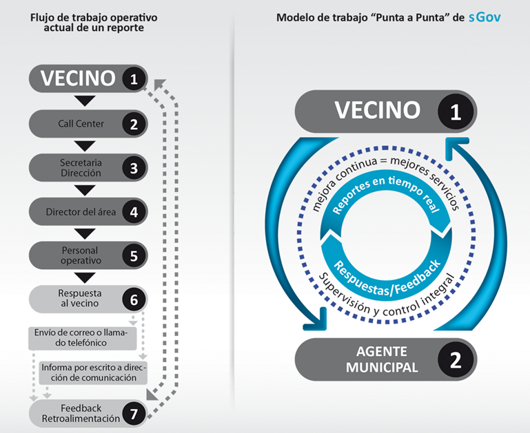

Del gobierno abierto al gobierno de servicios
Marcos Malamud es uno de esos amigos que encontré escribiendo este blog, a través de sus comentarios pude ir conociéndolo y conocer su trabajo en sistemas de gestión, también tuvimos la oportunidad de compartir un memorable capítulo de El Test Acido. Para mi es una gran satisfacción que haya aceptado esta invitación como vilano invitado y que nos regale este excelente post, que lo disfruten:
Del gobierno abierto al gobierno de servicios
Por Marcos Malamud (@mismatica – www.mismatica.com)
Voy a iniciar este post repitiendo los trillados y famosos objetivos del oGov (por sus siglas en ingles Open Government - gobierno abierto): transparencia, participación ciudadana y colaboración. ¿Por qué inicio el post así, se preguntara?
Porque es un término de “moda” que se aprovecha del avance de las tecnologías de la información (IT para quedar bien con el dueño del blog ;) jeje). Desde que tenemos democracias estables en nuestros países estos conceptos SIEMPRE fueron los pilares para la construcción de ciudadanía, tanto desde el punto de vista técnico, personal o colectivo. Si bien no depende exclusivamente de la IT, las nuevas tecnologías han permitido que los tres conceptos se acerquen a los ciudadanos de una manera más natural, accesibles desde lo económico y directamente “a la mano” (con las tablets y smartphones). Pero no hay que engañarse, siempre existió la posibilidad de exigir y ejecutar estos principios. La gran diferencia es que actualmente el nivel de compromiso ciudadano y la facilidad que brinda el concepto de “a la mano” potencian la exigencia exponencialmente. Se pide transparencia y participación porque nos resulta “cómodo” hacerlo desde el sillón de casa, o caminando desde la calle, y en cierto punto se colabora con otros para reclamar cosas parecidas. No mal interpreten, esa “comodidad” aparente (me parece genial que exista), en realidad funciona como una fuerte presión social y masiva que hace que las cosas cambien. Justamente eso es el mayor temor que detectan actualmente nuestros representantes de gobierno.
Una frase muy representativa de lo expuesto que adapté para un workshop que brindé en el Encuentro Nacional de Ciudades Digitales en el 2011 fue: *“Gobierno abierto, una vieja idea cuyo tiempo ha llegado” de @lnds *– originalmente era “Cloud, una vieja idea cuyo tiempo ha llegado”.
Desde el punto de vista de la “demanda ciudadano-gobierno-ciudadano” (llámese local, regional o central), se está forzando a que se reclamen mejores servicios a los equipos de gobierno. Deberíamos dejar de centrarnos en principios ya adquiridos (¿ganados?) en las actuales democracias, y arriesgarnos a transitar el proceso que nos lleve “del gobierno abierto al gobierno de servicios”.
Utilicé las líneas anteriores para dejar bien en claro mi concepto sobre sGov que acuñé como service government o gobierno de servicios (una buena “patada al pecho” para las “acciones de oGov” ;) jeje); ahora si paso a contarles mi experiencia en estos años de desarrollar y vender herramientas de gestión para gobiernos locales, los cuales forman parte de mi nicho de especialidad, combinando en partes iguales managment y IT, en el camino de tratar (en algunos casos con éxito) de convertir a los municipios en un gobierno de servicios.
Creo fervientemente y avalo mis declaraciones sobre datos concretos obtenidos en implementaciones con algunos clientes municipales (más adelante expongo unos resultados interesantes al respecto), que las herramientas o aplicaciones de sGov deben ser del tipo “punta a punta”, en otras palabras, un ciudadano (Yo los llamo vecinos-clientes, aunque a algunos les cause urticaria) no tiene que estar navegando y buscando un servicio del gobierno, ni menos saber a dónde debe dirigir sus reclamos o consultas, debe ser el propio gobierno que redireccione y asigne los pedidos de forma transparente para el vecino (aquí donde la IT entra en juego) y generar las consultas o pedidos de forma simple y directa “sin intermediarios ni delays”, claro está, debe combinarse de forma “multi-canal” tanto físico-presencial, virtual, mobile o Web, esto va a permitir a los gobiernos escuchar de forma activa a sus gobernados, dar respuestas en tiempo real (o lo más eficientemente posible, me gusta decir a mi), y consecuentemente recibir lo que, desde mi experiencia, es lo mejor del gobierno de servicios, el **FEEDBACK **directo y sin filtros. Este modelo de trabajo permite sin dudas dar mejores servicios, de calidad, con un control desde ambos lados del problema, comprometiendo a ambos actores en la resolución y luego vigilando y cuidando todo lo obtenido.

Aquí les comparto mi experiencia al respecto, ya que muchos (por no decir todos) los funcionarios de rango medio y alto que visito me muestran un profundo temor respecto a lo que algunos llaman el “empoderamiento del consumidor” y me encantaría mostrarles las cara de pánico en sus rostros cuando les comento que con sGov se le puede dar al vecino una herramienta para denunciar, consultar o reportar problemas en vivo desde la calle mientras caminan – paradójicamente los mandos bajos o agentes de campo piensan todo lo contrario y entienden que el vecino no es el enemigo (ya que son estos mismos agentes la mayoría de los RR.HH del Estado y son a su vez vecinos en sí mismos de donde trabajan), este “temor” se debe fundamentalmente a cuestiones culturales, burocráticas, corruptas, de desidia (o todas ellas juntas ;) jeje), pero también debo reconocer errores de los desarrolladores de software que venden sistemas que no tienen en cuenta las cuestiones operativas de un reporte o reclamo ciudadano, y generan meros sistemas de captura y acumulación de números de reportes en grandes listas tipo sabanas, que lo único que hacen es sumar más miedo a ese “temor” inicial.
En este punto, se debe dar una inflexión en los agentes de gobierno que toman las decisiones, deben tomar el toro por las astas y encarar los problemas en forma seria y programada, sincerarse con los vecinos y darles información clara y exacta sobre los tiempos y formas de resolución de los problemas consultados o reportados (entiéndase que no dije “sincericidio” eso ya lo están haciendo en la actualidad prometiendo cosas que no cumplen de manera reiterada), o bien pueden esconder la cabeza en el agujero como el avestruz con las consecuencias que esto conlleva.
Como les comente antes, mis afirmaciones se basan en datos reales, utilizando como ejemplo un análisis que realicé sobre indicadores de un servicio público municipal: el del alumbrado público (obligación municipal en todos los municipios, ayuntamientos o prefeituras de Latam) donde, en base a 35.000 respuestas o feedback, sobre 400.000 reclamos o reportes acumulados en dos de mis sistemas desde el 2004 hasta el día de ayer, dieron estos resultados:
80% = “Gracias” o “Muchas gracias” como palabra suelta o frase completa.
15% = “Seguridad, Oscuridad o Mayor iluminación”.
5% = Otras palabras en general.
¿Qué punto quiero destacar con estos 3 indicadores? – que sistemas o aplicaciones de sGov simplemente brindan MEJORES servicios desde la perspectiva del vecino, es decir calidad y satisfacción, en idioma del funcionario de gobierno “votos” ;). Como siempre les digo a mis clientes, el primer objetivo debe ser “Reparar todo lo que se reclama” es decir un concepto de EFICACIA, y luego cumplido este paso, ir hacia algo como “El mejor servicio, es el que no se nota” es decir un concepto de EFICIENCIA.
Para ir cerrando, creo que las aplicaciones de sGov deben ser concebidas como una herramienta de “inteligencia de negocios” más que como meros sistemas de acumulación de datos planos o lineales, pero apuntalando sus pilares en sistemas expertos de gestión operativa interna, para que basados en datos concretos de la gestión diaria de cada unos de los servicios gubernamentales y las necesidades de los vecinos-clientes, se puedan tomar mejores decisiones político-estratégicas más eficientes y de mejor calidad.
Esto solo será posible hacerlo bien si tenemos en cuenta algo muy importante que considero el “talón de Aquiles” del gobierno electrónico que es que en la mayoría de los casos los desarrollos o implementaciones no tienen en cuenta el FACTOR HUMANO que tiene que USAR las aplicaciones y sistemas. Soy un ferviente creyente de que los agentes municipales deben ser tenidos muy en cuenta al momento de desarrollar y es importante escucharlos y hacerlos participar, integrándolos en el producto final, esto resulta una condición NECESARIA para el éxito de las implementaciones, hoy en día nos centramos en la usabilidad de una de las “puntas” - los vecinos (cosa que está muy bien), pero tenemos que concentrarnos en la otra “punta” – los agentes municipales, en base a mi experiencia estos actores pueden hundir por completo un proyecto o proyectarlo al éxito con la misma velocidad, y bien luego como me gusta decirlo, dejar que el software “evolucione” y crezca.
Finalmente quiero agradecer infinitamente a Eduardo por la honorable invitación para escribir en su blog, y también a Marco y Ubaldo que mediante esa loca y genial tertulia digital que dieron en llamar @eltestacido permiten integrar y hacer participar a referentes de la IT, entrepreNERDs y a mentes inquietas como la mía en sus charlas y permitirnos compartir experiencias, conocimiento y todo con mucho humor y vino, salud amigos y GRACIAS ¡!